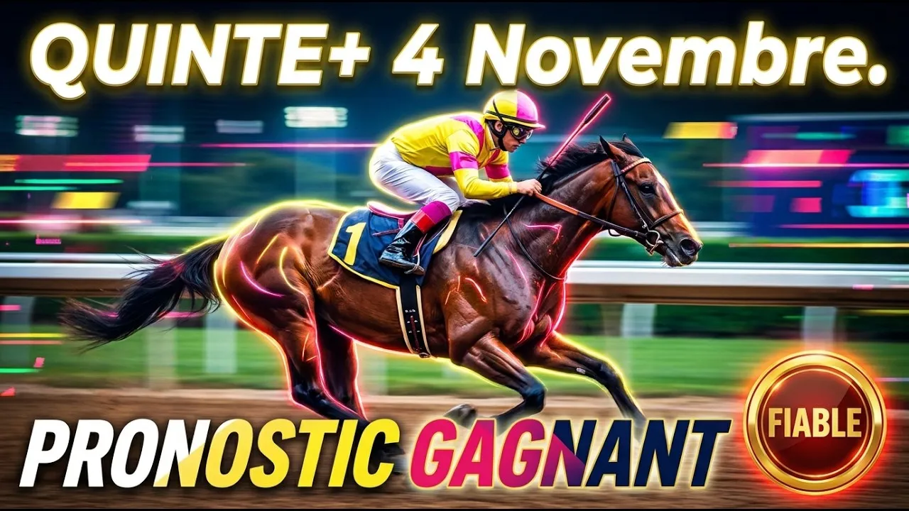

Bienvenue au Petit Port de Nantes, où le sable armoricain s'apprête à accueillir un affrontement d'une intensité rare. Ce mercredi 4 novembre 2026, à 13h55 précises, les cadors du trot français se retrouvent pour la 12ème étape du Grand National du Trot. Un Groupe 3 exceptionnel disputé sur 3 000 mètres, doté de 90 000 euros d'allocations.
Assez des analyses vagues et des pronostics prévisibles. Nous plongeons au cœur de la stratégie, examinons la mécanique des rendements de distance et disséquons chaque cheval pour débloquer le Quinté+.
Parce que la configuration de cet anneau en sable corde à gauche est particulièrement exigeante. La ligne droite du Petit Port permet des explications franches, mais le virage serré impose un placement parfait dès le départ. Avec un recul de 25 mètres pour les plus riches, ceux du premier poteau possèdent un avantage tactique considérable s'ils impriment un rythme soutenu. Rendre du terrain exige un coffre extraordinaire et une pointe de vitesse dévastatrice.
13 trotteurs de 5 à 10 ans étaient engagés, répartis sur trois échelons. Neuf chevaux s'élancent au premier poteau sur 3 000 mètres, trois trotteurs doivent rendre 25 mètres, tandis que le seul concurrent du troisième poteau est non-partant. La course se disputera donc avec 12 concurrents effectifs.
Hongre de 7 ans entraîné par Jean-Paul Marmion et drivé par Antoine Wiels, Jerenal d'Hameline compte 254 760 euros de gains et reste déferré des postérieurs. C'est le parfait connaisseur du Petit Port, où il compte deux victoires en trois tentatives. Avec sept podiums lors de ses sept dernières sorties, le duo Wiels et Marmion affiche 58 % de réussite dans les cinq premiers au Quinté. Même s'il monte de catégorie, sa condition physique en fait un candidat très sérieux pour les places.
Femelle de 8 ans présentée et drivée par François Guinhut, Idole de Meat totalise 254 890 euros et reste ferrée des quatre pieds. Bien que sixième d'un Groupe 3 à Feurs récemment, elle n'a pas couru depuis la mi-septembre et montre une certaine inconstance. Face à une telle opposition et sans allègement de ferrure, sa tâche s'annonce délicate. Nous préférons l'écarter de nos sélections.
Hongre de 9 ans de l'entraînement de Charles-Antoine Mary, confié à Matthieu Abrivard, Happy Face crédite de 264 985 euros et se présente déferré des quatre pieds. Venant de faire un net regain de forme en se classant quatrième d'un événement, son driver Matthieu Abrivard affiche une réussite remarquable de 52 % dans les Quinté depuis un an. Ce tandem vise une place au terme d'un parcours caché.
Hongre de 9 ans entraîné par Stéphane Provoost et drivé par Julien Travers, Happy Danover totalise 266 855 euros et reste déferré des quatre pieds. Ses récentes prestations ne plaident guère en sa faveur, n'ayant pu faire mieux que sixième lors de ses ultimes tentatives. Confronté à des trotteurs plus jeunes, sa marge est extrêmement réduite. Il aura bien du mal à s'immiscer à l'arrivée.
Jument de 7 ans entraînée par Christophe Clin et confiée à Jean-Philippe Monclin, Jane Aimée crédite de 271 140 euros et reste ferrée pour cette sortie. Elle vient d'effectuer une rentrée discrète à Caen après neuf mois d'absence. Ayant encore besoin de courir pour retrouver son meilleur niveau, elle constitue une impasse logique pour les parieurs.
Hongre de 7 ans entraîné par Kévin Leblanc et drivé par Alexis Collette, Jentil Dieschoot totalise 277 260 euros et reste déferré des quatre pieds. Leader au classement général provisoire du GNT 2026, il enchaîne les performances de premier ordre, se classant troisième à Argentan et quatrième à Reims. D'une grande fiabilité et parfaitement placé au premier échelon, il est prêt à défendre sa tunique jaune sur le podium.
Le grand favori de l'épreuve. Hongre de 6 ans issu de Ready Cash, entraîné par Sébastien Guarato et drivé par Hugues Monthulé, Karnac Wood totalise 289 206 euros et découvre un engagement sur mesure à seulement 790 euros du recul. Présenté plaqué des antérieurs et déferré des postérieurs, ce trotteur de classe compte 21 podiums dont 12 victoires en 32 courses. Deuxième des étapes du Croisé-Laroche et d'Argentan, il aborde ce rendez-vous au sommet de sa forme. C'est la base incontournable pour la victoire.
Femelle de 6 ans entraînée par Laurent-Claude Abrivard et associée à Alexandre Abrivard, Quelle Beauté crédite de 290 780 euros et se présente plaquée des antérieurs et déferrée des postérieurs. Après une déception à Reims, elle s'était classée troisième à Vincennes dans un bon chrono. Le tandem Alexandre et Laurent-Claude Abrivard affichant 41 % de réussite dans les cinq premiers au Quinté, un rachat de sa part est vivement attendu.
Jument de 9 ans entraînée par Stéphane Bourlier et confiée à Éric Raffin, Harmony la Nuit totalise 294 655 euros et se trouve engagée à la limite exacte du recul. Deuxième récemment à Caen et déferrée des quatre pieds, la présence d'Éric Raffin au sulky renforce considérablement ses chances. C'est un choix prioritaire pour les places.
Hongre de 7 ans entraîné par Charles-Marcel Bruneau et drivé par Anthony Barrier, Je Rêve du Bois crédite de 419 565 euros et est plaqué des antérieurs. En phase ascendante, il vient de signer une cinquième place dans l'étape d'Angers avant d'accrocher le podium à Vincennes. Malgré son handicap de 25 mètres, sa grande forme actuelle lui permet de prétendre à une place.
Hongre de 9 ans entraîné par Marc Sassier et drivé par Benjamin Rochard, Horatius d'Ela totalise 487 855 euros et se présente déferré des quatre pieds. Même si ses récentes sorties ont été moyennes, il convient de se souvenir de sa deuxième place derrière Kanto Avis dans l'étape lavalloise du GNT en juin. Le tandem Rochard et Sassier enregistrant 49 % de réussite dans les cinq premiers, la méfiance s'impose.
Voici notre coup de cœur de la course au second échelon. Hongre de 8 ans entraîné par Romain-Christian Larue et drivé par Mathieu Mottier, Ibiscus Man totalise 519 990 euros et se présente plaqué des antérieurs et déferré des postérieurs. Il vient de réaliser une superbe prestation dans le Grand Prix Anjou-Maine à Laval en s'intercalant entre des trotteurs de niveau Groupe 1. Mathieu Mottier affichant une régularité exemplaire au plus haut niveau, Ibiscus Man possède une classe pure supérieure pour survoler la ligne droite finale.
Le numéro 13 Jingle du Pont, qui devait s'élancer seul au troisième échelon avec 50 mètres de handicap, a été déclaré non-partant.
Pour élaborer une stratégie de jeu sur cette 12ème étape du GNT à Nantes, associez les bases solides du premier poteau à la classe du second échelon. La candidature de Karnac Wood offre des garanties exceptionnelles pour la victoire, tandis que le maillot jaune Jentil Dieschoot et la régularité d'Harmony la Nuit constituent des points d'appui en béton. Aux 25 mètres, la pointe de vitesse d'Ibiscus Man et la ténacité d'Horatius d'Ela sont indispensables pour pimenter les rapports.
Base : 7 Karnac Wood
Top 5 : 7 - 12 - 6 - 9 - 1
Couplé Placé :
7 Karnac Wood avec 12 Ibiscus Man et 6 Jentil Dieschoot
Deux sur Quatre :
7 - 12 avec 6 - 9 - 1 - 8
Multi en 5 :
7 - 12 - 6 - 9 - 1
Quinté+ Ordre :
7 - 12 en base avec 6 - 9 - 1 - 8 - 10 - 11 en associés
Retrouvez l'analyse vidéo complète sur notre chaîne YouTube Bravo Turf. Abonnez-vous, activez la cloche des notifications et laissez un pouce bleu si cette analyse vous a aidé.
⚠️ Jouez avec modération
Une analyse technique ne justifie jamais de miser au-delà de vos moyens. Ne misez jamais plus que ce que vous pouvez vous permettre de perdre. Fixez-vous un budget hebdomadaire et respectez-le. En cas de difficulté, consultez Joueurs Info Service au 09 74 75 13 13.